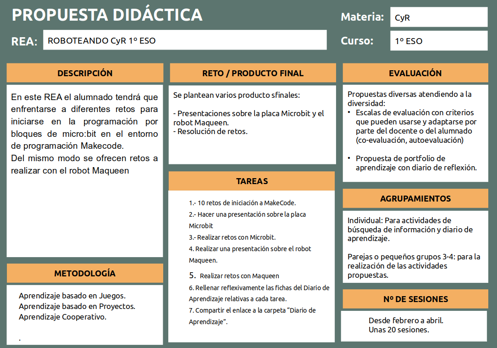

Descripción General
La situación de aprendizaje "EMPEZAMOS A PROGRAMAR CON SCRATCH CyR 1º ESO" se enmarca dentro de la asignatura de Computación y Robótica de 1º ESO.

El alumnado tendrá que enfrentarse a diferentes retos para iniciarse en la programación por bloques con Scratch y evaluar sus aptitudes y actitudes iniciales, que nos permitirán un mejor conocimiento y, por lo tanto una contextualización mejor de las tareas que se encomienden a posteriori.
Gran parte del trabajo se realizará de manera colaborativa: el alumnado deberá trabajar en equipo, llegar a acuerdos, tomar decisiones, repartir tareas..., potenciando así su competencia ciudadana, competencia personal, social y de aprender a aprender y su competencia emprendedora. Todo el proceso implicará el uso de herramientas digitales: aplicación para dispositivos móviles, investigación en la red... Por otra parte, las tareas intermedias de investigación, analizar registros, sacar conclusiones, plantear soluciones, y creación de documentación gráfica permitirá desarrollar las competencias lingüística, cultural y artística.
Para poder desarrollar el ámbito competencial de los alumnos, vamos a basarnos en elementos metodológicos, los cuales encajan en la definición de "metodologías activas", estando recogidas en las recomendaciones metodológicas que la propia LOMLOE establece.
- Aprendizaje basado en proyectos, cuyo producto final será la maqueta, desarrollando una serie de tareas que les permitirá alcanzar los aprendizajes necesarios para concluir el producto final.
- Aprendizaje cooperativo, como forma de organizar el trabajo de los alumnos dentro del aula, utilizando para ello el tablero Kanban para facilitar esta organización.
Todo ello acompañado del uso de dispositivos móviles en el aula y de herramientas TIC que permitan la adquisición de competencias, saberes y elaboración de “productos”.